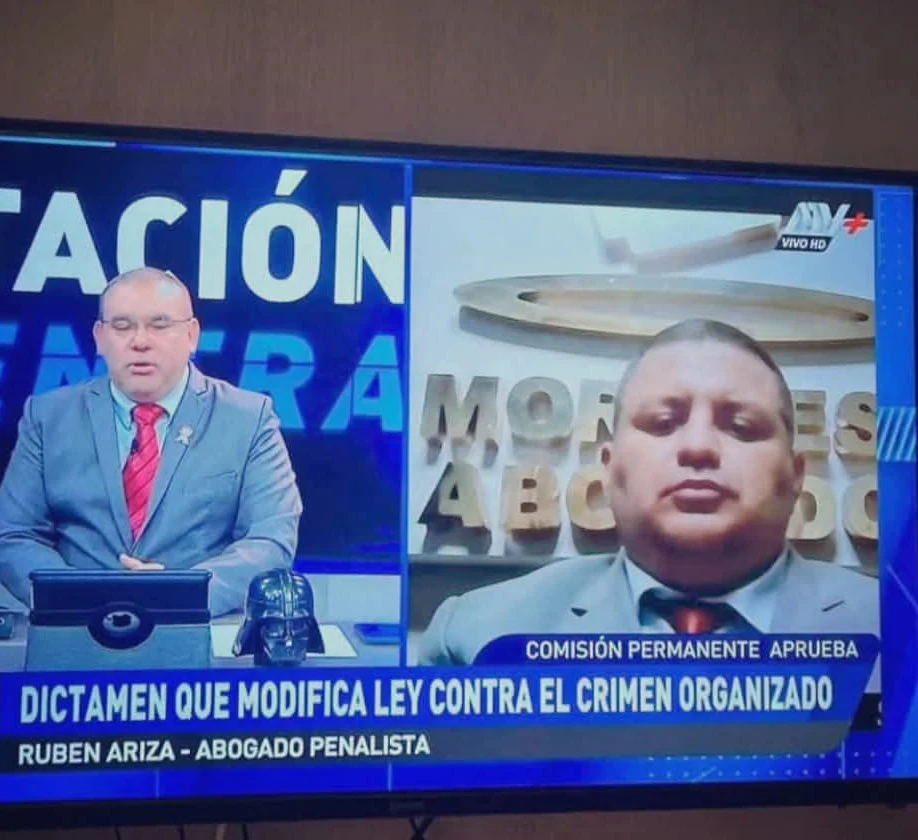
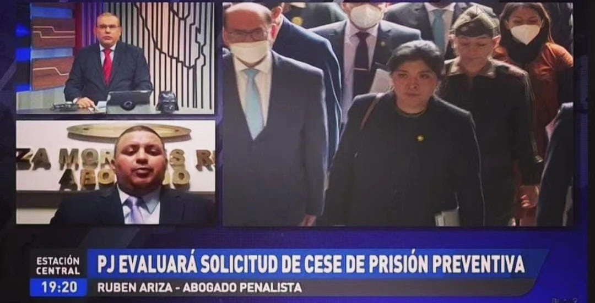
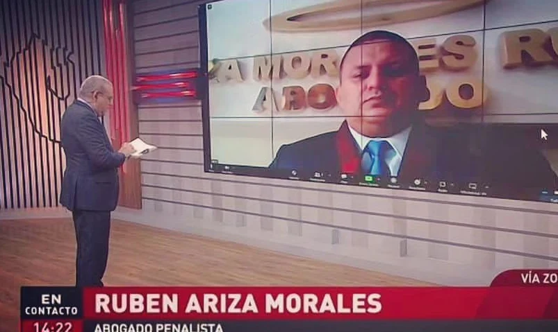
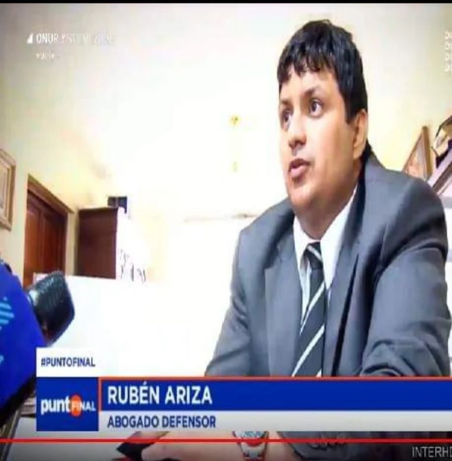
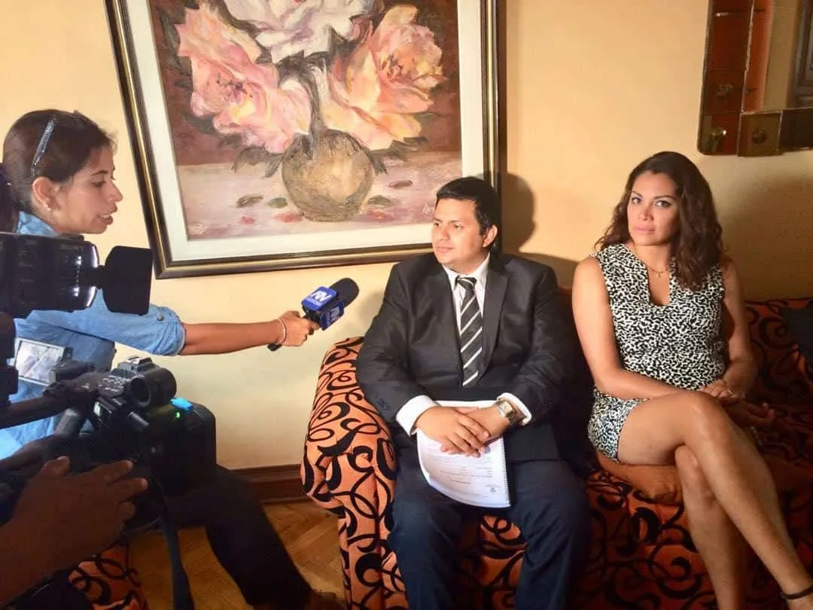
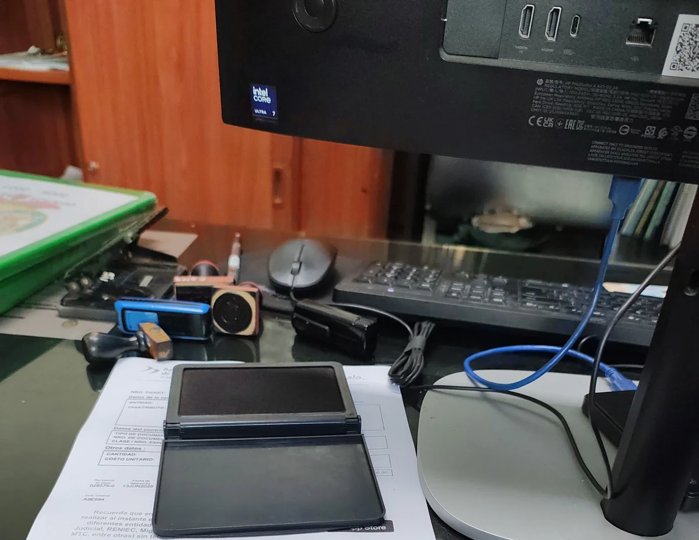

Lo dicen dos fuentes que no controlamos. La televisión lo llama después de que pasó algo grave, para que explique qué acaba de hacer un juez. Y su cliente lo escribió igual: «tomaron el caso a la mitad porque otros abogados nos fallaron».




Lo llaman para explicar qué cambia una ley contra el crimen organizado. No es su caso: es su materia.
Fotografías de las emisiones tomadas por el propio estudio. Los rótulos son los que emitió cada programa. La sexta emisión, sobre una condena por maltrato animal, se lista abajo pero no se muestra: su imagen es la del animal herido.
Seis veces un canal necesitó que alguien explicara un fallo penal, y marcó su número.
Las horas al aire y los titulares se leen en sus propias capturas.
Seis emisiones, tres programas. Las horas y los titulares son los que se ven en sus propias capturas.
Importante, y va por delante: en estas emisiones participa como comentarista experto — lo llaman para explicar qué acaba de resolver un juez. La página no afirma, ni insinúa, que haya sido el abogado de ninguno de esos casos.
Reseñas textuales de su ficha de Google. Se acortan con puntos suspensivos donde el detalle del caso era sensible; nunca se edita el sentido.
«…evitaron que injustamente se vaya en prisión preventiva. Mi agradecimiento al Doctor Ariza y Gary Flores Velarde quienes tomaron el caso a la mitad porque otros abogados nos fallaron anteriormente.»
«…más pudo la venganza que contrató el mejor bufete y ni así nos pudo ganar… felizmente los jueces no se intimidaron.»
«Excelente estudio jurídico en materia de recuperación de crédito.»
«Excelente profesional en litigio de tierras.»
Reseñas en Google. El promedio que muestra la ficha es 5.0.
Un promedio no es un pleno: hay reseñas de una estrella, como en cualquier estudio con este volumen. Las que se citan arriba son textuales.
Nada de banco de imágenes: el local, la marca de la recepción y la puerta con su placa son suyos.


Escriba por WhatsApp y explique la situación —en qué está y desde cuándo—. De ahí se ve si hay caso y qué se puede hacer.